5주차 1교시 — 환경 라이팅 시스템 (학생용)
관련 문서
| 관계 | 문서 |
|---|---|
| 강의 계획서 | 강의계획서: Game Engine II |
| 강의 아웃라인 | 5주차 아웃라인: 환경 라이팅과 에셋 배치 |
- 빈 레벨에서 환경 라이팅을 처음부터 구축할 수 있다
- Directional Light, SkyAtmosphere, SkyLight, Fog, Cloud의 역할을 이해할 수 있다
- Env. Light Mixer로 환경 라이팅을 한 번에 생성하고 관리할 수 있다
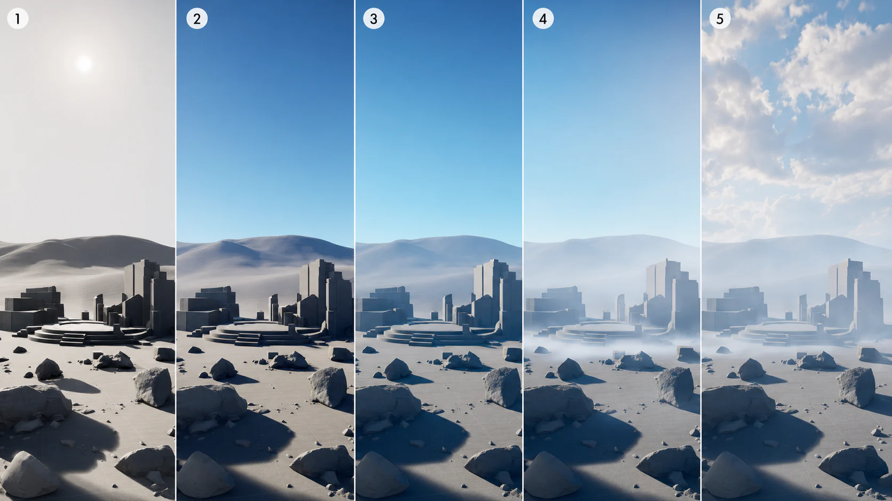
이 5개를 하나씩 넣으면서 어떤 변화가 생기는지 직접 눈으로 확인합니다.
1. 레벨 준비
4주차에서 만들어둔 레벨을 열거나, 없는 경우 새로 생성합니다.
- File > Open Level에서 4주차 레벨을 여세요
- 없으면 File > New Level > Basic으로 생성
- Cube 바닥(Scale 20,20,1)과 폴리지가 있는 상태에서 시작합니다
바닥과 풀이 있는 상태이면 됩니다. 이미 준비한 경우 그대로 사용하세요.
2. Directional Light 구축 — Directional Light
기존 라이팅 삭제 — 암흑에서 시작
기본 레벨에 이미 하늘과 라이팅이 들어있습니다. 이를 모두 삭제하고 처음부터 만들어야 원리를 이해할 수 있습니다.
라이팅 삭제:
- Outliner 검색창에 “light”를 검색 → Ctrl+A로 전부 선택 → Delete
- “fog” 검색 → 삭제
- “sky” 검색 → 삭제
- “cloud” 검색 → 삭제
- Outliner 검색창을 비우세요
뷰포트가 완전히 어두운 상태이 됩니다. 나무도 풀도 있지만 빛이 없으므로 보이지 않습니다.
Directional Light 생성 + 조작
Directional Light 배치:
- Place Actors 패널을 여세요 (Shift+1 또는 Window > Place Actors)
- 검색창에 “directional”을 타이핑하세요
- Directional Light를 뷰포트 중앙으로 드래그하세요
- 한쪽 면에만 빛이 비칩니다
- 배경은 여전히 검정입니다
빛은 생겼지만, 하늘이 없으므로 배경은 아직 검정입니다.
Directional Light 회전 시연:
- Outliner에서 DirectionalLight를 선택하세요
- 회전 모드로 전환하세요 (단축키 E)
- 뷰포트에서 회전 기즈모를 드래그하세요
- 위에서 비추면 한낮처럼 밝음
- 수평에 가까우면 긴 그림자, 노을 느낌
- 아래로 내리면 어두워짐 (밤)
Directional Light 개념 + Light Mobility
디렉셔널 라이트는 가상세계에서 태양 역할을 합니다.
| 특성 | 설명 |
|---|---|
| 직진성 | 모든 광선이 같은 방향으로 평행하게 나감 — 태양빛과 동일 |
| 거리 무관 | 거리에 따라 빛의 강도가 변하지 않습니다 |
| 위치 무의미 | Location을 바꿔도 변화 없음. Rotation(회전)으로 빛의 방향 = 시간대를 결정 |
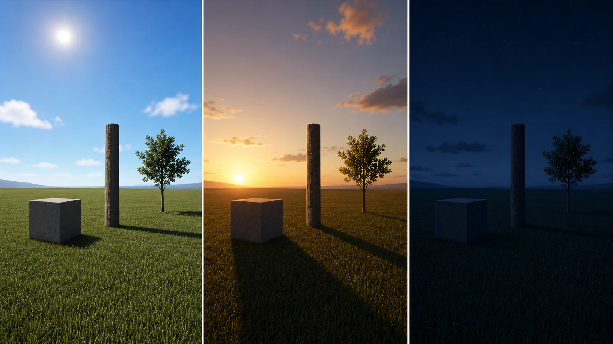
정리하면, 위치를 바꿔봐야 소용없습니다. 회전만이 의미 있습니다.
Directional Light 주요 속성 (Details 패널):
| 속성 | 기본값 | 설명 | 조절 팁 |
|---|---|---|---|
| Intensity | 10.0 lux | 빛의 세기. 값이 높을수록 밝음 | 실외 태양: 10~15, 흐린 날: 3~5 |
| Light Color | 흰색 | 빛의 색상. 클릭하면 컬러 피커 열림 | 노을: 주황빛, 달빛: 파란빛 |
| Use Temperature | 꺼짐 | 켜면 색온도(K)로 빛 색을 제어 | 5500K=한낮, 3000K=석양, 8000K=흐린 하늘 |
| Temperature | 6500 K | Use Temperature 켰을 때만 적용 | 낮은 값=따뜻, 높은 값=차가움 |
| Source Angle | 0.5357 | 태양 디스크 크기. 값이 클수록 그림자 가장자리가 부드러워짐 | 0.5=현실 태양, 2~3=부드러운 그림자 |
| Atmosphere Sun Light | 체크됨 | SkyAtmosphere와 연동하여 태양 위치를 결정 | 기본 체크 유지 |
Intensity는 햇빛 밝기, Light Color는 빛 색, Source Angle은 그림자 부드러움입니다. 이 3개만 알면 됩니다.
Light Mobility라는 개념도 중요합니다. 라이트마다 ’이 빛을 어떻게 처리할 것인가’를 정해줘야 합니다.
| Mobility | 그림자 | 실시간 변경 | 성능 비용 | 사용 시점 |
|---|---|---|---|---|
| Static | 라이트맵에 구워짐 (빌드 필요) | 불가 — 게임 중 바꿀 수 없음 | 가장 가벼움 | 움직이지 않는 고정 조명 |
| Stationary | 정적 그림자 + 일부 동적 | 색/강도만 변경 가능 | 중간 | 하루 중 변하지 않는 실내 조명 |
| Movable | 완전히 동적인 그림자 | 위치/회전/색 전부 변경 가능 | 가장 무거움 | 태양처럼 움직여야 하는 빛 |
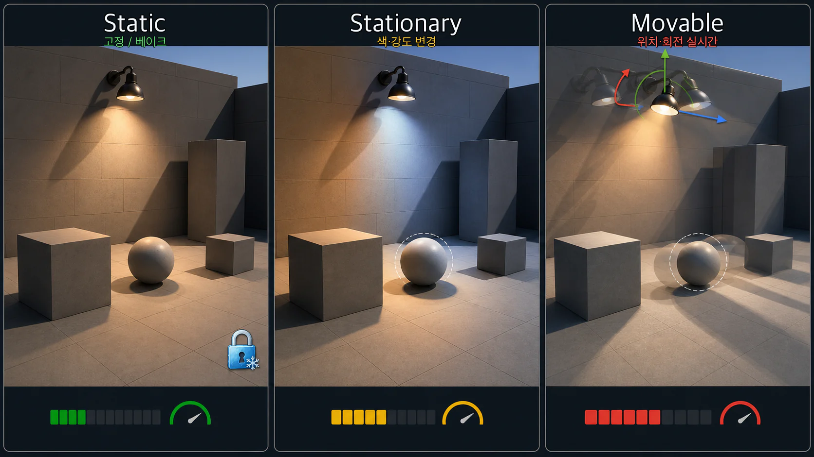
예전에는 Movable 라이트를 많이 쓰면 부담이 컸지만, UE 5.7에서는 MegaLights가 Beta로 개선되어 많은 동적 라이트를 다루는 흐름이 좋아지고 있습니다. 뒤에서 사례로 다룹니다.
작업 팁: Ctrl + L
기즈모로 회전하는 것보다 훨씬 빠른 방법이 있습니다.
Ctrl + L을 누른 채로 마우스를 움직여보세요:
- Directional Light가 마우스 움직임에 따라 빠르게 회전됩니다
- 마우스를 왼쪽/오른쪽으로 움직이면 태양 위치(시간대)가 변경됩니다
- 마우스를 위/아래로 움직이면 태양 높이가 변경됩니다
- Viewport 안쪽을 먼저 클릭해서 포커스를 줘야 작동합니다
학생 실습
Directional Light를 넣고 회전해보세요. 기즈모로도 해보고, Ctrl+L로도 해보세요.
- “Ctrl+L이 안 돼요” → Viewport 안쪽을 먼저 클릭하세요
- “빛이 안 바뀌어요” → Location이 아니라 Rotation을 바꿔야 합니다
Directional Light만 있으면 하늘이 보이지 않습니다. 배경이 검정이므로, 하늘을 만들려면 다른 구성요소가 필요합니다.
3. 하늘과 그림자 — SkyAtmosphere + SkyLight
SkyAtmosphere — 대기를 만들기
하늘이 없으므로 배경이 검정입니다. SkyAtmosphere를 넣어봅니다. 이름 그대로 — 하늘(Sky) + 대기(Atmosphere)입니다.
SkyAtmosphere 배치:
- Place Actors 패널을 여세요 (Shift+1)
- 검색창에 “sky atmosphere”를 타이핑하세요
- Sky Atmosphere를 뷰포트 아무 곳에나 드래그하세요 — 위치는 상관없습니다
배경에 하늘이 나타납니다. Directional Light 각도에 따라 노을이 보이기도 하고, 파란 하늘이 보이기도 합니다.
| 역할 | 설명 |
|---|---|
| 대기 생성 | 하늘색, 노을, 밤하늘을 표현하는 대기 층을 만들어줌 |
| Directional Light 연동 | 태양 없이 대기만 있으면 변화가 적으므로 기본적으로 함께 사용 |
| 시간대 연동 | Directional Light를 회전하면 대기 색이 자동으로 바뀜 |
디렉셔널 라이트 + SkyAtmosphere — 이 두 개가 기본 세트입니다.
SkyAtmosphere 주요 속성 (Details 패널):
| 속성 | 기본값 | 설명 | 조절 팁 |
|---|---|---|---|
| Rayleigh Scattering Scale | 0.0331 | 대기 산란 강도. 하늘이 파란 이유가 이 산란 때문 | 올리면 하늘이 더 강렬, 낮추면 탁한 느낌 |
| Rayleigh Scattering Color | 파란색 | 산란 색상. 바꾸면 하늘 전체 색이 변함 | 흰색=흑백 하늘, 보라=SF 느낌 |
| Mie Scattering Scale | 0.003996 | 안개/미립자 산란. 태양 주변 빛번짐(halo) 제어 | 올리면 태양 주변이 뿌옇게 |
| Mie Anisotropy | 0.8 | 산란 방향성. 1에 가까울수록 태양 쪽으로만 빛번짐 | 낮추면 빛이 전방향으로 퍼짐 |
| Absorption Scale | 0.001881 | 대기가 특정 색을 흡수하는 정도 | 올리면 보색이 하늘에 강하게 나타남 |
| Ground Radius | 6360.0 | 행성 크기 (km). 지구 반지름 기준 | 바꾸면 수평선 곡률이 달라짐 |
대부분은 기본값 그대로 써도 충분합니다. 외계 행성이나 판타지 분위기를 만들고 싶을 때 Rayleigh Color나 Absorption을 바꿔보세요. 물리를 이해할 필요 없이 색을 바꿔보고 마음에 드는 것을 사용합니다.
시연: Ctrl+L로 연동 확인
Ctrl+L로 회전시켜보세요.
- 빛이 높을 때: 맑은 파란 하늘
- 빛이 수평일 때: 붉은 노을 — 하늘 전체가 주황+보라빛
- 빛이 아래일 때: 어두운 밤하늘
Directional Light 하나를 회전시킨 것뿐인데 SkyAtmosphere가 연동해서 대기 색을 자동으로 바꿔주는 것입니다.
SkyLight — 그림자에 SkyLight로 그림자 보완하기
하늘이 생겼지만 아직 어색한 부분이 있습니다. 나무 뒤쪽, 빛이 안 닿는 부분이 매우 어둡습니다. 현실에서 그림자는 검정에 가깝게이 아닙니다. 하늘빛이 반사되어 그림자에도 약간의 색이 있습니다.
SkyLight 배치:
- Place Actors 패널 검색창에 “sky light”을 타이핑하세요
- Sky Light를 뷰포트 아무 곳에 드래그하세요
- 배치하는 순간 그림자 부분의 색이 바뀝니다
| 항목 | SkyLight 적용 전 | SkyLight 적용 후 |
|---|---|---|
| 그림자 색 | 검정에 가깝게, 디테일 없음 | 하늘색이 반영된 자연스러운 색 |
| 어두운 영역 | 뭉개져서 형태 구분 어려움 | 형태가 살아남, 디테일 보임 |
| 전체 느낌 | CG 같은 부자연스러운 느낌 | 훨씬 자연스럽고 현실적 |
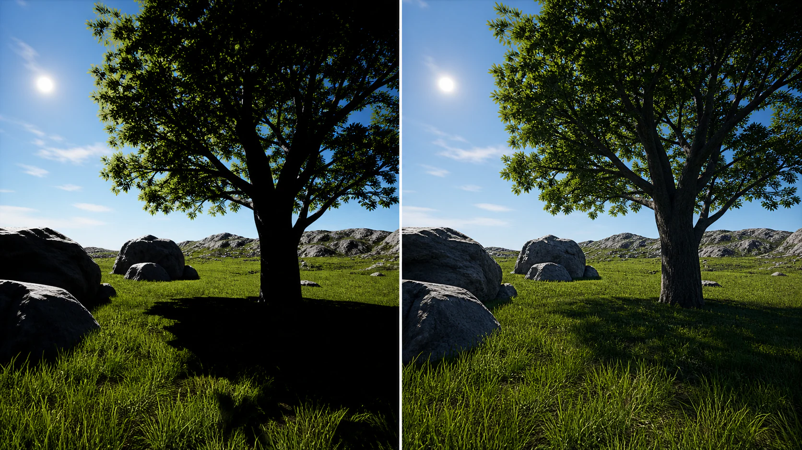
SkyLight를 켠 뒤 그림자 색과 어두운 영역의 디테일이 어떻게 달라지는지 뷰포트에서 직접 비교해보세요.
스카이 라이트는 빛을 받지 않는 그림자에 하늘의 컬러를 입혀줍니다.
SkyLight 주요 설정:
설정을 하지 않으면 실시간으로 반영이 되지 않습니다.
- Outliner에서 SkyLight를 선택하세요
- Details 패널 상단에서 Mobility를 Static에서 Movable로 변경하세요
- Details 패널 Light 섹션에서 Real Time Capture 체크박스를 켜세요 (검색창에 “real time” 입력하면 빠름)
| 설정 | 값 | 안 하면? |
|---|---|---|
| Mobility | Movable | 하늘 색 변해도 그림자 색 안 바뀜 |
| Real Time Capture | 체크 | Directional Light 회전해도 반영 안 됨 |
Movable로 설정하면 시간대 변화나 하늘 색 변화가 실시간 조명 흐름에 더 잘 반영됩니다. UE 5.7의 Lumen은 동적 간접광을 계산할 수 있으므로, 이번 실습처럼 낮/노을을 움직이며 보는 장면에서는 SkyLight를 Movable로 두는 편이 이해하기 쉽습니다.
SkyLight 주요 속성 (Details 패널):
| 속성 | 기본값 | 설명 | 조절 팁 |
|---|---|---|---|
| Intensity Scale | 1.0 | 간접광 밝기 배율 | 올리면 그림자가 밝아짐. 0.5~2.0 범위 추천 |
| Light Color | 흰색 | 간접광 색 틴트 | 보통 흰색 유지. 특수 분위기 시 조절 |
| Source Type | SLS Captured Scene | 주변 씬을 캡처하여 간접광 계산 | 기본값 유지 권장. Cubemap으로 바꾸면 HDR 이미지 사용 가능 |
| Real Time Capture | 꺼짐 | 매 프레임 주변 캡처 갱신 | Directional Light 회전 시 그림자 색 변화를 함께 보고 싶을 때 켜기 |
| Lower Hemisphere Is Solid Color | 체크됨 | 바닥 아래를 단색으로 처리 | 체크 시 바닥 반사가 단순해져 성능 이득 |
| Cubemap Resolution | 128 | 캡처 해상도 | 높이면 정밀하지만 무거움. 128이면 충분 |
Intensity Scale이 가장 자주 건드리는 값입니다. 그림자가 너무 어두우면 올려보세요.
추가 비교 시연
나무를 비활성화하고 풀만 남겨보면 차이가 더 명확합니다.
| SkyLight 적용 전 | SkyLight 적용 후 |
|---|---|
| 풀과 바닥의 그림자가 검정에 가까운 상태 | 그림자에 하늘 색이 반영되어 디테일이 살아남 |
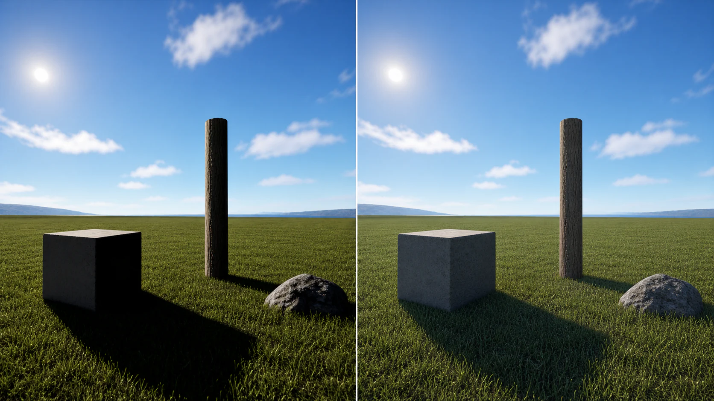
학생 실습
SkyAtmosphere, SkyLight를 넣어보세요. SkyLight를 선택해서 Mobility를 Movable, Real Time Capture를 체크한 뒤 Ctrl+L로 돌려서 노을을 만들어보세요.
- SkyLight의 Mobility가 Static인 경우 → Movable로 바꿔주세요
- Real Time Capture 체크 안 한 경우 → Light 섹션에서 체크박스를 찾아보세요
- SkyAtmosphere를 안 넣은 경우 → SkyAtmosphere 먼저 넣어야 합니다
4. 안개와 구름 — Fog 시스템
Exponential Height Fog — 안개를 설정하기
Directional Light, SkyAtmosphere, SkyLight 3개를 넣었지만, 하늘과 바닥이 만나는 부분의 경계가 너무 선명합니다. 실제 세계에서 멀리 있는 것은 뿌옇게 보입니다. 안개 때문입니다.
Exponential Height Fog 배치:
- Place Actors 패널 검색창에 “exponential”을 타이핑하세요
- Exponential Height Fog를 뷰포트 아무 곳에 드래그하세요
배경의 검정색이 사라지고, 멀리 있는 오브젝트가 뿌옇게 보이기 시작합니다.
Fog의 역할 2가지:
| 역할 | 설명 | 왜 중요한가 |
|---|---|---|
| 안개 | 말 그대로 안개를 표현 | 공포, 몽환, 새벽 같은 분위기 연출에 유용 |
| 공기 원근법 | 멀리 있으면 색상과 선명도가 떨어지는 현상 | 원근감 표현 + LOD 변화를 시각적으로 가려주는 역할 |
공기 원근법이란, 밖에 나가서 먼 산을 보면 가까운 산은 진한 초록인데 먼 산은 뿌옇고 파란 현상입니다. 포그가 이것을 만들어줍니다.
Fog 속성 조절:
- Outliner에서 ExponentialHeightFog를 선택하세요
- Details 패널에서 주요 속성을 조절하세요
Fog Density (밀도):
| 값 | 결과 | 용도 |
|---|---|---|
| 0.02 (기본) | 자연스러운 약한 안개 | 일반 야외 씬 |
| 0.1 | 중간 안개, 원경이 뿌옇게 | 안개 낀 아침 |
| 0.5 | 매우 짙은 안개 | 공포/미스터리 |
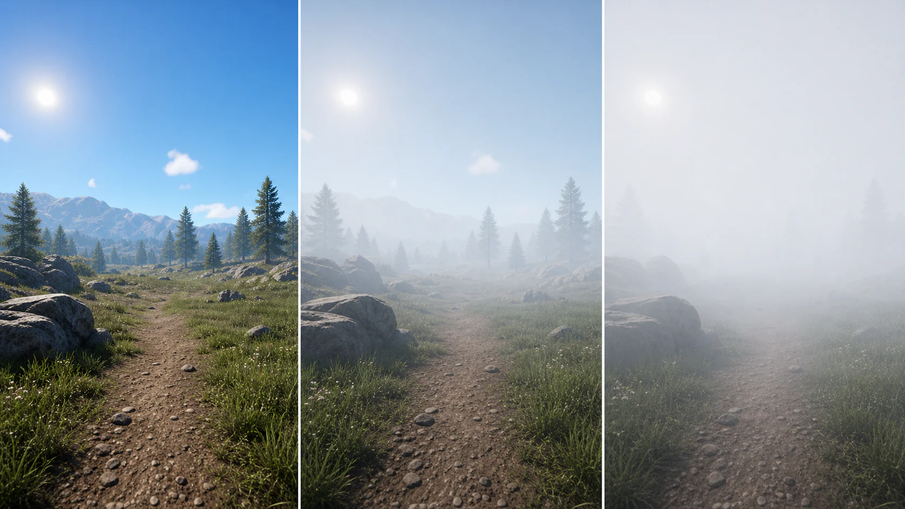
Fog Density를 0.5까지 올리면 안개가 너무 짙어서 태양빛조차 가려집니다. 다시 0.02로 돌려놓으세요.
Fog Density는 값 차이가 바로 보이는 편입니다. 0.02, 0.1, 0.5를 차례로 넣어보고 원경이 얼마나 가려지는지 직접 비교하세요.
Fog Height Falloff (높이 감쇠):
- 값을 낮추면 (예: 0.2) 안개가 더 높이까지 퍼짐
- 값을 높이면 (예: 2.0) 바닥 근처에만 안개가 깔림
- “높이 감쇠”니까: 높은 값 = 빠르게 감쇠 = 바닥에만 안개
Fog Inscattering Color (포그 색상):
- 색상 막대를 클릭하면 컬러 피커가 열림
- 하늘의 색과 유사하게 맞춰주는 것이 자연스러움
- 노을 씬이면 주황빛, 한낮이면 하늘색
Local Fog Volume — 특정 위치에만 안개 깔기
Exponential Height Fog는 월드 전체에 균일하게 안개가 깔립니다. 동굴 입구에만 안개를 깔고 싶다면 Local Fog Volume을 사용합니다. 현재 UE5에서 사용할 수 있는 국소 안개 액터로, 특정 위치에만 안개를 배치할 때 유용합니다.
| 비교 | Exponential Height Fog | Local Fog Volume |
|---|---|---|
| 범위 | 전체 월드에 균일하게 적용 | 배치한 볼륨 안쪽에만 적용 |
| 용도 | 씬 전체의 기본 안개 | 동굴 입구, 호수 위, 절벽 아래 등 국소 연출 |
| 개수 | 레벨에 1개 | 원하는 만큼 여러 개 배치 가능 |
Local Fog Volume 배치:
- Place Actors 패널에서 “local fog”를 검색하세요
- Local Fog Volume을 뷰포트에 드래그하세요
- 바위 뒤쪽이나 나무 사이에 배치해보세요
- Details 패널에서 크기(Scale)를 조절하면 안개 영역이 바뀝니다
Local Fog Volume 주요 속성 (Details 패널):
| 속성 | 기본값 | 설명 | 조절 팁 |
|---|---|---|---|
| Fog Density | 1.0 | 이 볼륨 안의 안개 농도 | 0.5=은은한 안개, 5.0=짙은 안개 |
| Albedo | 흰색 | 안개 색상 | 보통 흰색/회색. 초록빛=독안개, 주황빛=먼지 |
| Emissive | 검정 | 안개 자체가 빛을 내는 정도 | 살짝 올리면 안개가 은은하게 빛남 |
| Fog Shape | Box | 안개 영역의 형태 (Box/Sphere) | Sphere가 자연스러운 경우가 많음 |
| Scale (Transform) | 1,1,1 | 안개 영역 크기 | X/Y/Z를 키워서 원하는 범위 설정 |
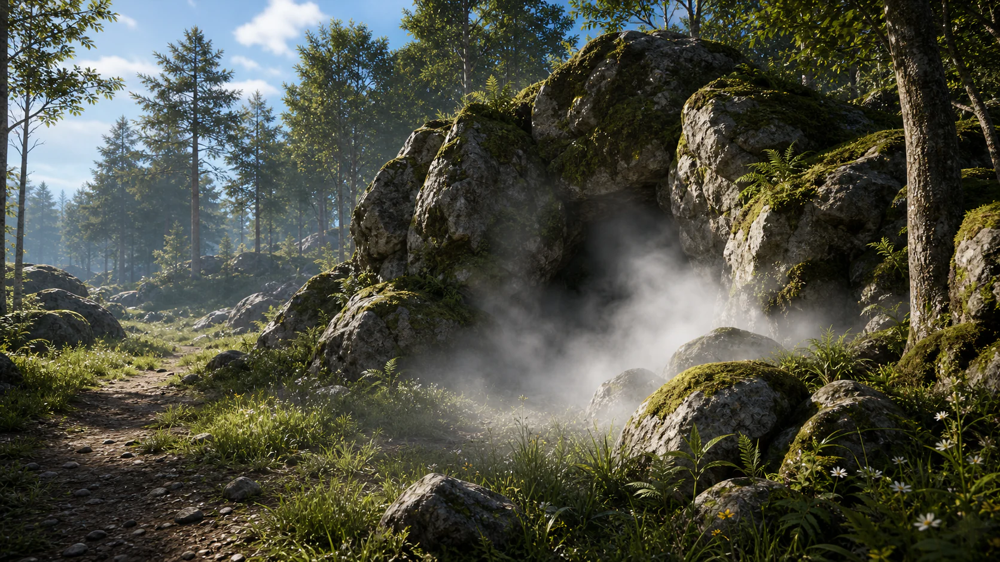
실무에서 매우 자주 사용됩니다. 동굴 입구에 깔아두면 안에 무엇이 있을까 궁금해지는 분위기가 만들어지고, 호수 위에 깔면 새벽 물안개가 되고, 절벽 아래에 깔면 깊은 골짜기 느낌이 납니다. 시네마틱에서 분위기 연출할 때 특히 유용합니다.
Volumetric Fog + Volumetric Cloud
| Exponential Height Fog | Volumetric Fog | |
|---|---|---|
| 원리 | 거리와 높이에 따라 단순히 색상과 투명도를 조정 | 빛이 대기 입자와 상호작용하며 산란되는 현상을 시뮬레이션 |
| 표현 | 기본 안개 | 안개 + God Ray(빛줄기) 표현 가능 |
| 비용 | 가벼움 | GPU 사용량 더 많음 |
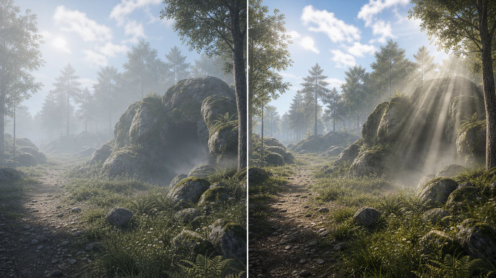
핵심은, 볼류메트릭 포그를 켜면 God Ray를 표현할 수 있다는 것입니다. 나무 사이로 빛줄기가 내려오는 효과입니다.
Volumetric Fog 활성화 — 별도 액터가 아닙니다:
- Outliner에서 ExponentialHeightFog를 선택하세요
- Details 패널에서 Volumetric Fog 섹션을 찾으세요 (검색창에 “volumetric” 타이핑)
- Volumetric Fog 체크박스를 켜세요
기존 Fog 액터에서 옵션 하나만 켜면 됩니다.
Volumetric Fog 주요 속성 (Details 패널 > Volumetric Fog 섹션):
| 속성 | 기본값 | 설명 | 조절 팁 |
|---|---|---|---|
| Scattering Distribution | 0.2 | 빛이 얼마나 한 방향으로 산란하는지 | 0=균일 산란, 1에 가까울수록 태양 방향으로만 God Ray |
| Albedo | 흰색 | 안개 입자의 색상 | 보통 흰색 유지. 색 바꾸면 안개 자체에 색이 입혀짐 |
| Extinction Scale | 1.0 | 안개에 의한 빛 감쇠 정도 | 올리면 안개가 빛을 더 많이 흡수 → 더 짙어짐 |
| View Distance | 6000.0 | 볼류메트릭 포그가 보이는 최대 거리 | 올리면 먼 곳까지 God Ray 보임, 성능↓ |
Scattering Distribution과 Extinction Scale을 바꿔보세요. God Ray의 강도와 느낌이 크게 달라집니다.
Volumetric Cloud 추가:
- Place Actors 패널에서 “volumetric cloud”를 검색하세요
- Volumetric Cloud를 뷰포트에 드래그하세요 — 위치는 상관없습니다
구름이 안 보인다면 포그 밀도를 0.02~0.05로 낮춰보세요.
Volumetric Cloud 주요 속성 (Details 패널):
| 속성 | 기본값 | 설명 | 조절 팁 |
|---|---|---|---|
| Layer Bottom Altitude | 5.0 (km) | 구름 층의 시작 높이 | 낮추면 구름이 가까이, 올리면 높은 하늘에 |
| Layer Height | 10.0 (km) | 구름 층의 두께 | 두꺼우면 웅장한 적란운 느낌 |
| Shadow View Sample Count Per Pixel | 1.0 | 구름 그림자 품질 | 올리면 그림자가 선명, 성능↓ |
| Tracing Start Max Distance | 350.0 (km) | 구름 렌더링 최대 거리 | 기본값 유지 추천 |
보통 기본값으로 충분합니다. 구름 높이(Bottom Altitude)와 두께(Layer Height)만 알아두면 됩니다.
Point Light + Volumetric Fog 시연
포인트 라이트를 넣어서 볼류메트릭 포그와 어떻게 상호작용하는지 확인합니다.
Point Light 배치:
- Place Actors 패널에서 “point light” 검색하세요
- Point Light를 뷰포트에 드래그 — 나무 사이에 2개 배치하세요
- 첫 번째 Point Light 선택 → Details에서 Light Color를 빨간색으로 변경
- 두 번째 Point Light 선택 → Light Color를 파란색으로 변경
- 각 Point Light의 Volumetric Scattering Intensity를 3.0으로 올리세요 (Details 검색창에 “volumetric scattering” 타이핑)
Point Light 주요 속성 (Details 패널):
| 속성 | 기본값 | 설명 | 조절 팁 |
|---|---|---|---|
| Intensity | 8.0 cd | 빛의 밝기 (칸델라 단위) | 횃불: 5~10, 가로등: 50~100, 강렬한 조명: 500+ |
| Light Color | 흰색 | 빛의 색상 | 자유롭게 바꿔보세요 |
| Attenuation Radius | 1000.0 | 빛이 영향을 미치는 반경 (cm) | 좁은 방: 300~500, 넓은 공간: 1000+ |
| Source Radius | 0.0 | 광원의 물리적 크기 | 올리면 그림자 가장자리가 부드러워짐. 10~30 추천 |
| Cast Shadows | 체크됨 | 그림자 생성 여부 | 성능 부족 시 끄면 가벼워짐 |
| Volumetric Scattering Intensity | 1.0 | 볼류메트릭 포그에서의 산란 강도 | 올리면 안개 속에서 빛이 더 많이 퍼짐 |
Attenuation Radius는 빛이 닿는 범위입니다. 이 범위 밖에 있으면 아무리 밝아도 빛이 닿지 않습니다. Source Radius를 올리면 그림자가 부드러워지는데, 현실에서 전구가 크기를 가지고 있는 것과 같은 원리입니다.
Point Light 색을 바꿔 Volumetric Fog 속에서 빛이 어떻게 퍼지는지 직접 확인하세요.
빨간 빛과 파란 빛이 안개 속에서 퍼져 나가는 것이 볼류메트릭 포그의 힘입니다.
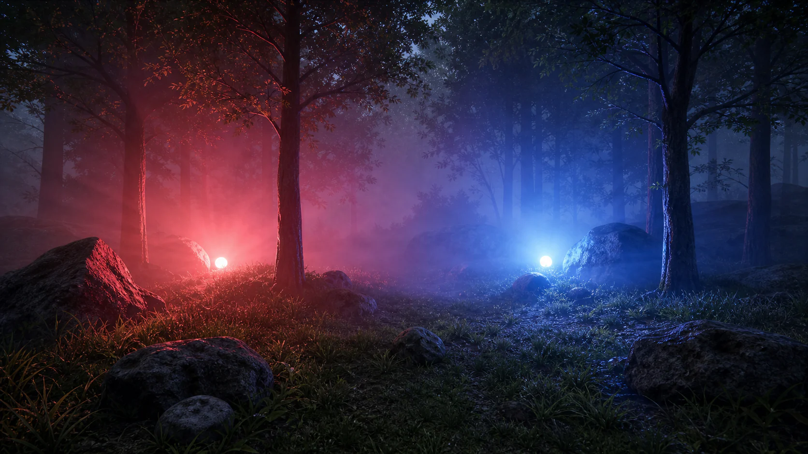
| 단계 | 설정 | 결과 |
|---|---|---|
| 1단계 | Exponential Height Fog만 (Volumetric 꺼짐) | 기본 안개, Point Light 빛이 퍼지지 않음 |
| 2단계 | Volumetric Fog 켜기 | God Ray 시작, 약한 빛 산란 |
| 3단계 | Volumetric Scattering Intensity = 3.0 | 빛이 강하게 산란, 시네마틱 느낌 |
학생 실습
Volumetric Fog를 체크하고, Point Light 2개를 넣어서 색을 바꿔보세요. Volumetric Cloud도 넣어보세요.
- “Volumetric Fog가 어디 있어요?” → Exponential Height Fog의 Details에서 검색
- “구름이 안 보여요” → Fog Density를 0.02~0.05로 낮추세요
- “Point Light 빛이 안 퍼져요” → Volumetric Fog 체크 + Scattering Intensity 올리기
5. MegaLights — 라이팅의 나나이트
포인트 라이트를 100개 넣으면 성능이 급격히 떨어집니다. 원래는 동적 라이트를 많이 넣으면 성능이 급격히 저하되기 때문에 Static으로 구워서 사용했습니다.
UE 5.7에서는 MegaLights가 Beta로 제공됩니다. 나나이트가 고밀도 메쉬를 효율적으로 다루는 것처럼, MegaLights는 많은 동적 라이트가 있는 장면의 직접광 처리를 더 효율적으로 만드는 방향의 기능입니다.
MegaLights 활성화:
- Edit > Project Settings를 여세요
- 검색창에 “megalights”를 타이핑하세요
- Rendering > Direct Lighting 섹션에서 MegaLights 를 활성화하세요
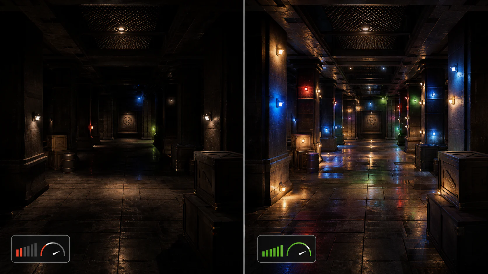
| 항목 | MegaLights OFF | MegaLights ON |
|---|---|---|
| 라이트 10개+ | 장면에 따라 프레임 부담 증가 | 많은 동적 라이트 장면에서 부담 완화 가능 |
| 그림자 품질 | 라이트 수가 늘면 품질/성능 관리가 어려움 | 더 일관된 품질을 목표로 함 |
| 라이트 개수 제한 | 실질적으로 제한이 큼 | 복잡한 라이트 장면을 다루기 쉬워짐 |
실습에서 성능 문제가 생기면 이 옵션을 떠올리면 됩니다.
6. Env. Light Mixer — 한 번에 만들기
Env. Light Mixer로 전체 생성
매번 Place Actors에서 하나씩 검색해서 넣는 것 대신, 한 번에 할 수 있는 도구가 있습니다.
Env. Light Mixer 열기:
- 에디터 상단 메뉴바에서 Window를 클릭하세요
- 아래로 스크롤하여 Env. Light Mixer를 찾아 클릭하세요
- 별도 창이 열립니다
Env. Light Mixer 창에서 현재 레벨에 없는 환경 라이팅 요소는 Create 버튼으로 표시됩니다.
라이팅 전체 삭제 후 재생성:
- Outliner에서 DirectionalLight, SkyLight, SkyAtmosphere, ExponentialHeightFog, VolumetricCloud 전부 선택 → Delete
- Point Light 2개도 지워주세요
- Env. Light Mixer 창을 보면 Create 버튼들이 나타납니다
Env. Light Mixer 창에서 5개 Create 버튼을 위에서부터 순서대로 클릭하세요:
- Create Sky Light 클릭
- Create Directional Light 클릭
- Create Sky Atmosphere 클릭
- Create Volumetric Cloud 클릭
- Create Height Fog 클릭
Outliner 폴더 정리:
- Outliner에서 폴더 생성 (+ 버튼 또는 우클릭 > Create Folder)
- 폴더 이름: “Lightings”
- 라이팅 액터 5개를 전부 이 폴더로 드래그
폴더링은 습관입니다. 안 그러면 나중에 찾기 어렵습니다.
학생 실습
라이팅 전부 지우고 → Env. Light Mixer로 5개 Create → SkyLight 설정 → Lightings 폴더 정리를 해보세요.
- Env. Light Mixer 메뉴를 못 찾는 경우 → Window 메뉴 아래쪽에 있습니다
- Create 버튼이 안 보이는 경우 → 이미 해당 라이팅이 있으면 Create 대신 속성이 표시됩니다
7. Day Sequence 플러그인 소개
Env. Light Mixer보다 더 상위 도구로, Day Sequence라는 플러그인이 있습니다. 시간이 흐르는 연출 — 낮에서 노을, 밤, 새벽까지 자동으로 바뀌게 하고 싶을 때 사용합니다. UE 5.7 기준 플러그인 기능이므로 프로젝트 설정에서 활성화 여부를 확인해야 합니다.
Day Sequence 플러그인 활성화:
- Edit > Plugins를 여세요
- 검색창에 “Day Sequence”를 타이핑하세요
- Day Sequence 플러그인을 활성화하세요
- 에디터를 재시작하세요
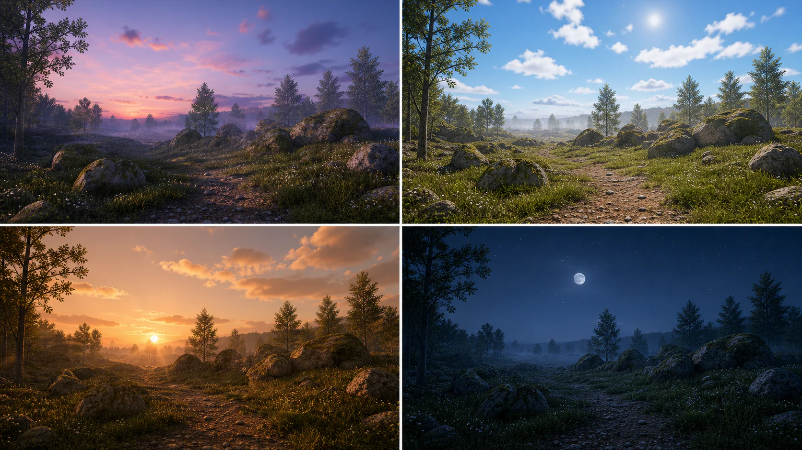
이 플러그인을 활성화하면 24시간 사이클을 자동으로 생성해줍니다. 낮 → 노을 → 밤 → 새벽까지 자연스럽게 전환됩니다. 시네마틱에서 시간 경과를 연출할 때 특히 유용합니다. 학기 말에 시네마틱 영상을 만들 때 활용해보세요.
정리
핵심 요약
Directional Light + SkyAtmosphere: 태양과 하늘의 기본 세트입니다. Ctrl+L로 시간대를 조절합니다.
SkyLight: 그림자에 하늘 색을 반영합니다. 동적 시간대 연출에서는 Movable + Real Time Capture 설정을 사용합니다. Lumen GI와 함께 이해하면 좋습니다.
Fog: 안개 + 공기 원근법입니다. Volumetric Fog 체크 하나로 God Ray까지 표현 가능합니다. Local Fog Volume으로 국소 안개도 가능합니다.
MegaLights: 많은 동적 라이트가 있는 장면의 직접광 처리를 효율화하는 Beta 기능입니다. ’라이팅의 나나이트’는 이해를 돕는 비유로 확인합니다.
Env. Light Mixer / Day Sequence: 환경 라이팅 빠른 생성과 24시간 사이클 연출 도구입니다.
환경 라이팅 5대 요소:
- Directional Light — 태양
- SkyAtmosphere — 대기/하늘
- SkyLight — 그림자에 하늘색 반영
- Exponential Height Fog — 안개 + 공기 원근법
- Volumetric Cloud — 구름
2교시 예고
2교시에는 SkyAtmosphere 심화부터 시작하여, 에셋을 효율적으로 재사용하는 레벨 인스턴스와, 캐릭터가 바위를 뚫고 가지 않게 하는 콜리전을 다룹니다. SkyAtmosphere에서 Absorption, Rayleigh Scattering 같은 값을 조절하면 하늘 분위기를 크게 바꿀 수 있습니다.